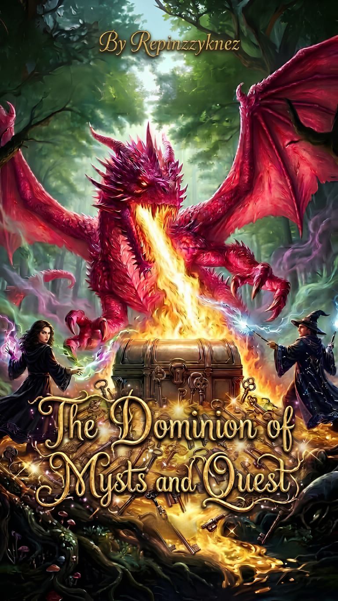

Behind the Pen ✍️
Crafting immersive fantasy worlds, emotional character arcs, and interactive narratives.
My Writing Journey
Welcome! I'm Krizzy, an aspiring fantasy author writing under the pen name REPINZZYKNEZ. Creative writing has always been my creative escape and passion, a way to build intricate worlds and explore complex human emotions through fantasy literature.
By day (and sometimes night, haha!), I study Computer Science, which gives me a unique perspective on storytelling. I love to experiment with narrative structures and explore the boundaries of traditional storytelling.
What I Write
✨ Fantasy & Worldbuilding
High fantasy, immersive magic systems, ancient lore, and deep atmospheric environments.
🗡️ Dark Fantasy & Adventure
High-stakes questing, dungeon exploration narratives, and morally complex hero journeys.
Technical & Software Skills
Current Work

The Dominion of Mysts and Quest
In a realm filled with mysterious and magical ethereal creatures, a pink dragon lies in the Domain of Mysts. This enchanting land is veiled in enchantment, where the air is alive with ancient spells and whispers of forgotten legends. Within the Dominion of Mysts, an epic journey awaits those who possess the bravery to seek it. This journey not only promises thrilling adventures, but also the opportunity to uncover the secrets of the universe and attain unimaginable power. It is believed that only a select few, guided by the spirit of the four dragon that symbolizes the houses of Azurewing Academy can embark on this treacherous quest and emerge triumphant.